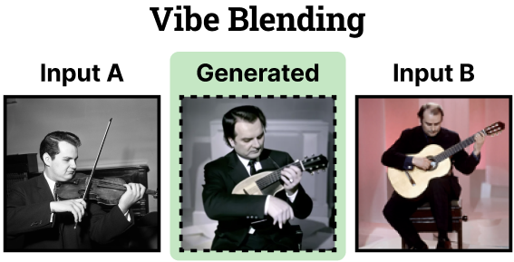
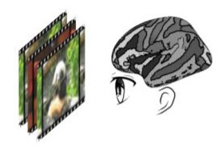

I am a CS PhD student (2022-) at the University of Pennsylvania, advised by Jianbo Shi and James C. Gee.
My research focuses on understanding and improving multimodal foundation models:
- Understand: Mechanistic analysis of VLM/LLM representations, brain-guided understanding of model representations. (CVPR 2024, Algonauts 2023, Algonauts 2021)
- Improve: Generative model's creativity and reasoning capabilities (CVPR 2026), transformer attention layers' inference efficiency (arXiv).
I also build open-source tools, including ncut-pytorch for fast spectral embedding.
Open-source Packages
ncut-pytorch
Nyström Normalized Cuts PyTorch
Normalized Cut with Nyström approximation, run on million-scale graph in milliseconds. O(n) time complexity, O(1) space complexity.
Selected Publications


Artifacts and attention sinks: Structured approximations for efficient vision transformers
arXiv



Upgrading Voxel-wise Encoding Model via Integrated Integration over Features and Brain Networks
Science Bulletin 2022 ✨Algonauts 2021, competition winner
Services
- Teaching Assistant: CIS 6800 Advanced Topics in Machine Perception (Fall 2023, Fall 2024)
Misc
maimai DX